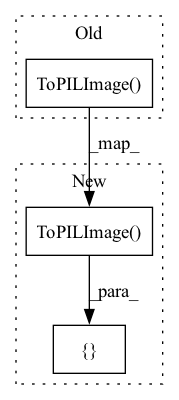

Pattern ID :23893

Before Change
self.basic_transform = StandardTransform(min_dim, to_tensor, normalize, norm_mean, norm_std)
self.transforms = []
self.transforms.append(transforms.ToPILImage())
if augmentation_label == "random_resized_crop":
self.transforms.append(transforms.RandomResizedCrop((min_dim, int(min_dim * 1.5)), scale=(0.67,1.0)))
elif augmentation_label == "random_rotation":
After Change
def __init__(self, augmentation_label, min_dim=300, to_tensor=True,
normalize=True, norm_mean=ZScoreConsts.Z_MEAN.value, norm_std=ZScoreConsts.Z_STD.value):
ts = [transforms.ToPILImage(), transforms.Resize(min_dim)]
if augmentation_label == "random_resized_crop":
ts.append(transforms.RandomResizedCrop((min_dim, int(min_dim * 1.5)), scale=(0.67,1.0)))
elif augmentation_label == "random_rotation":
In pattern: SUPERPATTERN
Frequency: 3
Non-data size: 3
Instances
Fragment ID: 74414635
Project Name: anderzzz/monkey_caput
Commit Name: 4a15b132f852b9c79bd0c9113ac821888541dbc6
Time: 2020-10-21
Author: ohrn.anders@gmail.com
File Name: fungiimg.py
M Class Name: DataAugmentTransform
N Class Name: DataAugmentTransform
M Method Name: __init__(7)
N Method Name: __init__(7)
M Parent Class: object
N Parent Class: object
M File Name: fungiimg.py
N File Name: fungiimg.py
M Start Line: 223
M End Line: 232
N Start Line: 301
N End Line: 313
'>
Before Change
if augment:
self.traintransform = transforms.Compose(
[transforms.ToPILImage(),
transforms.RandomApply([transforms.RandomAffine(0, translate=(0.2, 0.2))], p=0.5),
transforms.RandomHorizontalFlip(),
transforms.RandomApply([transforms.GaussianBlur(3)], p=0.5 if kwargs["gussian_blur"] else 0),
After Change
if augment:
self.traintransform = transforms.Compose(
[transforms.ToPILImage(),
// transforms.RandomApply([transforms.RandomAffine(0, translate=(0.2, 0.2))], p=0.5),
// transforms.RandomHorizontalFlip(),
// transforms.RandomApply([transforms.GaussianBlur(3)], p=0.5 if kwargs["gussian_blur"] else 0),
transforms.Pad(2),
transforms.TenCrop(kwargs["crop_size"]),
transforms.Lambda(lambda crops: torch.stack([transforms.ToTensor()(crop) for crop in crops])),
// transforms.Lambda(
// lambda tensors: torch.stack(
// [transforms.Normalize(mean=(self.mu,), std=(self.st,))(t) for t in tensors])),
'>
Fragment ID: 74414634
Project Name: pooya-mohammadi/fer
Commit Name: 00bb4ab427ffc84682cfc14e7f66e7f659801158
Time: 2021-08-18
Author: dor2ns@gmail.com
File Name: data/fer2013.py
M Class Name: RESCostumDataset
N Class Name: RESCostumDataset
M Method Name: __init__(7)
N Method Name: __init__(7)
M Parent Class: Dataset
N Parent Class: Dataset
M File Name: data/fer2013.py
N File Name: data/fer2013.py
M Start Line: 76
M End Line: 89
N Start Line: 76
N End Line: 89
'>
Before Change
normalize=True, norm_mean=[0.485, 0.456, 0.406], norm_std=[0.229, 0.224, 0.225]):
self.transforms = []
self.transforms.append(transforms.ToPILImage())
self.transforms.append(transforms.Resize(min_dim))
if square:
self.transforms.append(transforms.CenterCrop(min_dim))
After Change
def __init__(self, min_dim=300, to_tensor=True, square=False,
normalize=True, norm_mean=ZScoreConsts.Z_MEAN.value, norm_std=ZScoreConsts.Z_STD.value):
ts = [transforms.ToPILImage(), transforms.Resize(min_dim)]
if square:
ts.append(transforms.CenterCrop(min_dim))
if to_tensor:
'>
Fragment ID: 74414631
Project Name: anderzzz/monkey_caput
Commit Name: 4a15b132f852b9c79bd0c9113ac821888541dbc6
Time: 2020-10-21
Author: ohrn.anders@gmail.com
File Name: fungiimg.py
M Class Name: StandardTransform
N Class Name: StandardTransform
M Method Name: __init__(7)
N Method Name: __init__(7)
M Parent Class: object
N Parent Class: object
M File Name: fungiimg.py
N File Name: fungiimg.py
M Start Line: 184
M End Line: 194
N Start Line: 252
N End Line: 260